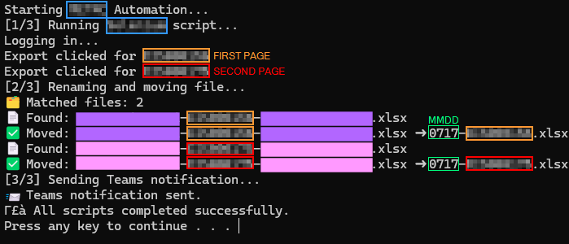

I Automated That!
One of the most difficult challenges I've come across within the “automation” buzzword is the inherent ambiguity of it. Automate what, exactly? And, essentially, is this actually going to save me time?
As an individual who happens to have a pretty-but-chaotic worldview from inside the ADHD world, I regularly face the challenge of having enough RAM in my brain to manage my tasks. If I start a task that requires several steps, it starts a thing in my brain that is hard to articulate, but feels a lot like opening the refrigerator door and walking away for a second while you step aside to holler down the hallway,
"WHAT WAS IT YOU WANTED TO DRINK?"
That is: you know that fridge door is open and wasting valuable electricity (which a parent probably pounded into your head when you were a child), and until you get your answer about what the yokel down the hallway asked for to drink, said door will remain open and, therefore, require some modicum of attention until it is closed. Its need to close sort of hangs in my head, following me around while I carry out the task of getting the cup and filling it and so forth.
At some point, I will pass by the fridge again and close it, but until that happens, I’m getting a slight lag in every other task because my floating thought about the open fridge door keeps reminding me it’s still hanging around.
I have a lot of these daily tasks that require attention, but minimal brainpower; they require a person to close a door or open a website or click a download button or actually take the drink to the lips.
My goal with automation, in the most generic sense, is to mitigate those low-brainpower, but still-human-effort tasks. By learning the steps required to complete a routine, I can sort out those low-brainpower tasks to automate the required effort by writing a thing that will do the clicking and downloading for you.
THIS is what I mean by automation:
- Opening a web browser
- Browsing to the site
- Logging in
- Navigating to each of the proper pages
- Downloading each file
- Renaming them according to the standardized convention
- Moving them to the proper folder for the next human-required step of data analysis
Instead of spending 10 minutes a day performing these rote, menial tasks that have been done hundreds of times, they can be outsourced to the chosen flow.
Eliminating the minor tasks that eat up RAM while pages load and data downloads and words are typed and characters are backspaced, etc.
There’s no need to even interrupt your thought-flow to remind yourself that those downloads need to be taken care of today.
Here’s what that looks like:

Blue: identifying info related to the file name and website
Orange: first page that needs to be navigated to
Red: second page
Pink/Purple: identifying file info per page
Green: MMDD filename format (
0717) as part of the naming convention
How It Works
Using Windows Task Scheduler, a batch routine, and three Python scripts, that 10ish-minute routine now runs daily at a specific time (or after login, in case of a reboot). It completes within about 2 minutes, without any user input.
The end user gets a notification that the files are in the correct spot and ready for the next injection of human interaction: the fun part—data cleanup and analysis.
Final Thoughts
Eventually, the data cleanup will be automated as well, leaving the real need for someone to devote any brain power only to the parts the automation can’t do: the humanization.
This includes troubleshooting when the batch file breaks, analyzing how to clean the data for the desired result, and deciding how to channel the data for one purpose or another.
No matter what data I can extract or build through “automation,” there will still need to be human interaction for it to be effective.
Troubleshooting is an invaluable skill to have—especially when developing workflows and understanding how the various apps a person uses each day are integrated and speaking to each other.
Additionally, anything written by ChatGPT or the like sounds like it was written by a robot. There is something human that is missing—perhaps it’s subtle style choices, varied language by each specific individual, or other intangibles that haven’t been defined.
Regardless, I’m here to help you build an automated system that blinks you through the parts of the day where you need to be doing anything other than staring at the blue circle on your screen that keeps turning and turning and turning while the computer is processing.